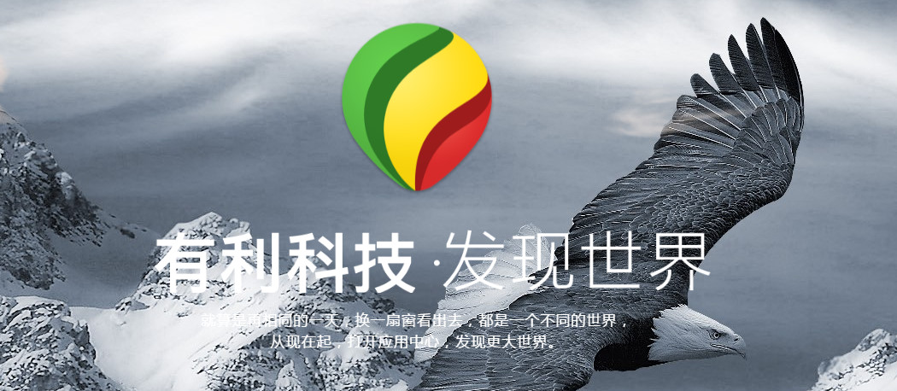

有利可图网站Cms二次开发(已和客户沟通，需接单请联我（李大林）)
-

-
一满乐-外卖App移动端数据爬取•项目目前情况
cms网站
项目进度：已和客户沟通，待接单
沟通日期：2016-12-2
页面个数：未知
开发人数：需要1-2个人开发
开发描述：cms开发，基本上纯Java开发
运行环境：后端Web容器-Tomcat
优码描述：已和客户进行沟通，主要难点在于需要熟悉cas(单点登录系统，以及比较熟悉开源项目jspcms)
原始描述：现阶段二次开发的任务是将原系统的新闻、视频、软件和文库开发成为独立的模块，使用二级域名直接访问。每个独立模块包括：分类管理（支持二级分类），数据管理，模版管理、数据采集（限新闻和视频模块）。
承接方式：
方式一：若1个人，结算时金额计算为：总金额 = 95%(团队人员) + 5%(最初接单人收取5%金额作为质量保证回头客客户关系维护)
方式二(二人)：负责人(做x%)+团队人员(做y%)，结算时金额计算为：总金额 = x%(负责人) + (y-5)%(团队人员) + 5%(最初接单人收取5%金额作为质量保证回头客客户关系维护)
方式三(二人)：负责人(做x%)+团队人员(做y%)，结算时金额计算为：总金额 = x%(负责人) + (y-z)%(团队人员) + z%(最初接单人收取z%金额作为质量保证回头客客户关系维护)(方式三是为了确保团队成员可以自行商量z的比例)
大鲲项目链接